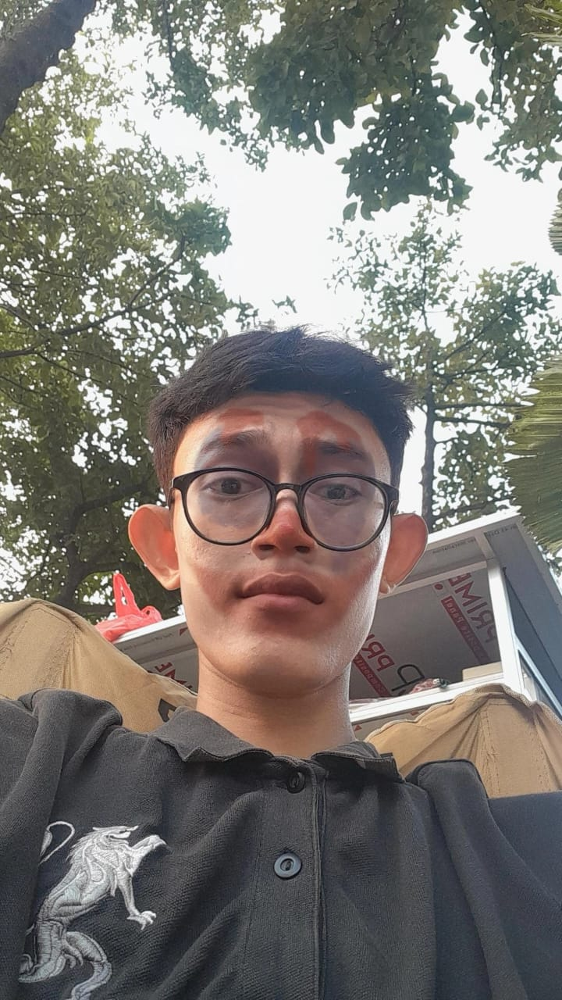
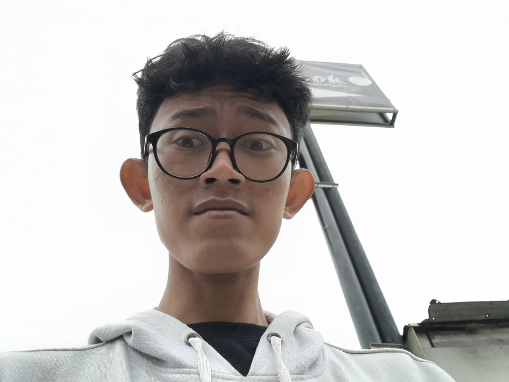

2024 — 2027
SMK Yadika 13
Akuntansi dan Keuangan Lembaga (AKL)
Mempelajari dasar-dasar akuntansi, administrasi, pengelolaan keuangan, dan penggunaan teknologi dalam kegiatan pembelajaran.
HALO, SELAMAT DATANG DI PORTOFOLIO SAYA
Saya adalah pelajar SMK jurusan Akuntansi dan Keuangan Lembaga yang tertarik pada dunia desain, teknologi, dan pengembangan website. Saya senang mencoba hal baru, belajar dari pengalaman, dan terus mengembangkan kemampuan diri.

01 / TENTANG SAYA

A LITTLE ABOUT MYSELF
Halo, saya Dimas Dwi Fernanda!
Saya merupakan pelajar SMK Yadika 13 jurusan Akuntansi dan Keuangan Lembaga (AKL). Saya memiliki ketertarikan pada akuntansi, desain, teknologi, dan web development.
Saya termasuk pribadi yang cenderung tenang atau pemalu, tetapi berusaha untuk selalu bertanggung jawab terhadap tugas dan kesempatan yang diberikan. Saya juga memiliki kemauan untuk terus belajar, mencoba hal baru, dan memperbaiki kemampuan diri.
Bagi saya, setiap pengalaman merupakan kesempatan untuk mendapatkan pengetahuan baru dan berkembang menjadi pribadi yang lebih baik.
02 / PENDIDIKAN
Tahapan pendidikan yang telah saya jalani.
2024 — 2027
Akuntansi dan Keuangan Lembaga (AKL)
Mempelajari dasar-dasar akuntansi, administrasi, pengelolaan keuangan, dan penggunaan teknologi dalam kegiatan pembelajaran.
2021 — 2024
Sekolah Menengah Pertama
Menempuh pendidikan tingkat sekolah menengah pertama.
2015 — 2021
Sekolah Dasar
Menempuh pendidikan dasar sebagai awal perjalanan pendidikan.
03 / PENGALAMAN
Pengalaman yang menjadi bagian dari proses belajar dan pengembangan diri.
7 MEI 2026 — 30 JULI 2026
Praktik Kerja Lapangan (PKL) · Divisi Akuntansi
Melaksanakan Praktik Kerja Lapangan untuk mengenal proses administrasi dan pencatatan keuangan secara langsung di lingkungan kerja.
Ketelitian dalam mengelola dokumen, tanggung jawab, kedisiplinan, serta pemahaman dasar administrasi dan pencatatan keuangan.
ORGANISASI SEKOLAH
Ketua
Mengikuti organisasi Rohani Islam (ROHIS) di lingkungan sekolah sebagai kesempatan untuk menambah pengalaman, belajar bekerja sama, dan mengembangkan rasa tanggung jawab.
04 / MINAT & KEAHLIAN
Bidang yang saya pelajari dan ingin terus kembangkan.
Mempelajari pencatatan transaksi, dokumen keuangan, dan dasar-dasar administrasi akuntansi.
BIDANG PEMBELAJARANMenyukai kegiatan desain dan eksplorasi kreativitas untuk membuat tampilan visual yang menarik.
HOBI & MINATBelajar membuat struktur, mengatur tampilan, dan mengembangkan website sederhana.
SEDANG DIPELAJARITertarik mengenal perkembangan teknologi dan berbagai hal baru di dunia digital.
HOBI & MINATMenggunakan aplikasi perkantoran untuk mengolah dokumen dan data dalam kegiatan belajar.
KETERAMPILAN DASARMemiliki tujuan untuk memperdalam pemrograman web dan membuat karya digital sendiri.
TUJUAN PENGEMBANGAN05 / TUJUAN SAYA
Saya ingin terus meningkatkan kemampuan di bidang akuntansi sekaligus memperluas pengetahuan di bidang teknologi.
Ke depannya, saya berharap dapat mengembangkan kemampuan web development, menghasilkan karya digital, dan memperoleh pengalaman yang bermanfaat untuk perjalanan pendidikan maupun karier saya.
06 / HUBUNGI SAYA
Terima kasih telah mengunjungi portofolio pribadi saya. Saya terbuka untuk menambah pengetahuan, pengalaman, dan koneksi baru.